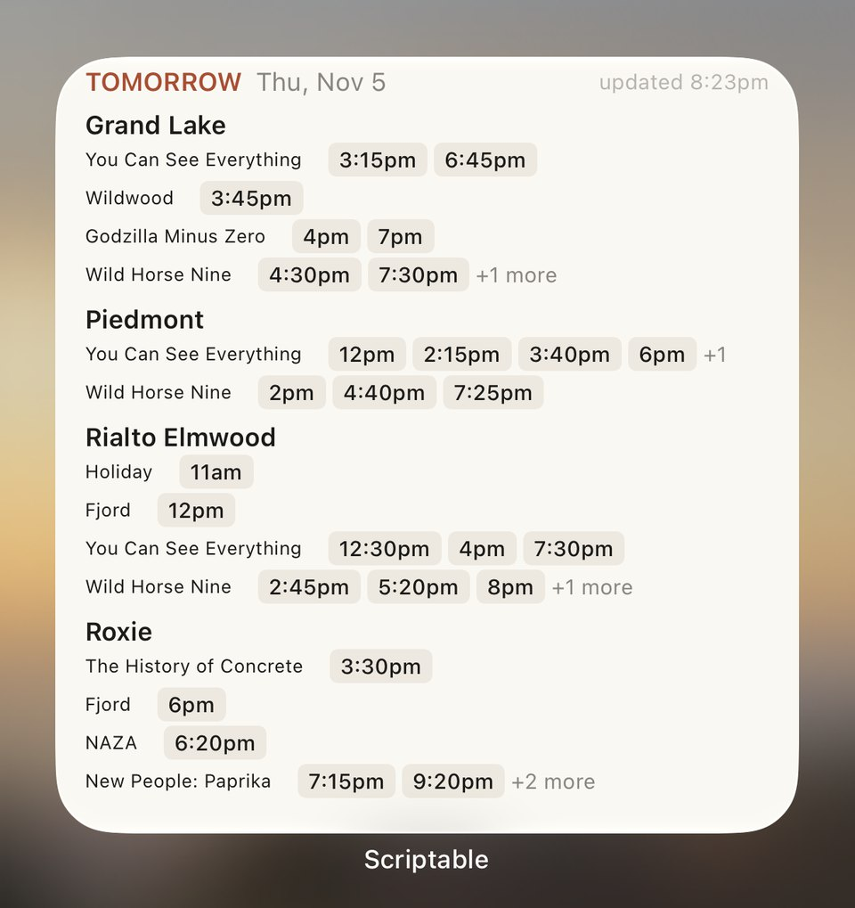
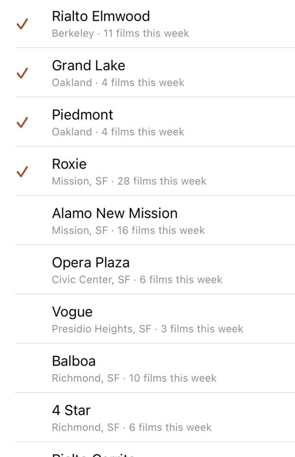
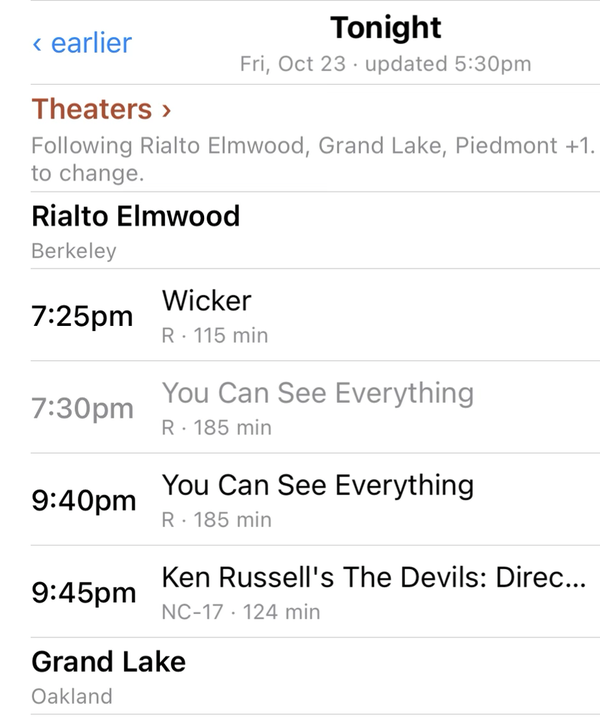

Smallest Show
Tonight at the independent cinemas of nearly 300 American cities: what's playing, what's sold out, a tap to tickets. Pick your city, then the theaters you go to.

Already have Scriptable? Just the second button. Nothing to edit; the script keeps itself up to date.
On a computer? Point your iPhone's camera here to open this page on the phone, where the buttons work.
Tonight, somewhere
Four of the theaters the widget reads, picked at random, with what's still to come today. A time goes to its ticket page.
Three steps
-
1
Add the script
With Scriptable installed, tap Add to Scriptable. Safari downloads SmallestShow.scriptable; open it from the Downloads arrow (or Files), and Scriptable asks to add it. Tap Add.
-
2
Pick your theaters
Run it once. It asks where you go to the movies, then which theaters you go to: tick yours and close the sheet. The Theaters › row at the top of the list changes them any time.

-
3
Add the widget
On the home screen, long-press, Edit › Add Widget, search Scriptable and pick the large size. Long-press it again, Edit Widget: Script Smallest Show, When Interacting Run Script.

On the widget, a time taps to that show's ticket page, a theater's name to its site, the title to the full list. Sold-out times are greyed. After the last show it rolls over to tomorrow.
Every independent cinema we can read
Listings are rebuilt every three hours through the day from each theater's own ticketing, and more theaters join every week.
- …theaters
- …cities
- …showtimes this week